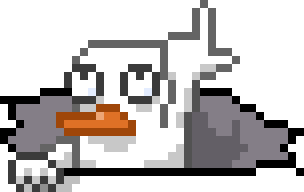

- 关于我 | About me -
MY LINKS
- 👋你好，我是孤灯从流(ShuninYu)。
- 你也可以叫我孤灯(我的朋友除了叫本名之外一般都这么叫我)，我是一名纯正🌎地球人
- 我爱好画画(漫画/插画/动画)，也喜欢打游戏(以及游戏开发/设计)、剪视频
- 现在正在学习Unity、C#、HTML、CSS和javascript
- 其他信息 | More informations -
- 🎮 我热爱游戏，擅长FPS。最喜欢的游戏是CSGO、旷野之息，最喜欢的游戏公司是任天堂和Valve。
- 🎮 任天堂一直在尝试给玩家最简单的游戏的快乐，而V社则像是一个极客、开创者(他们做出了传送门、半条命Alyx、Index控制器)
- 📖 我的启蒙漫画是鸟山明的《龙珠》，感受到分镜、叙事的渲染力的漫画是尾田荣一郎的《航海王》、大今良时的《声之形》
- ⚽ 我是一名资深球迷，曼城死忠。最喜欢的球员是阿圭罗他已经退役了，现役里最喜欢的球员是哈兰德
- 🥅 不只看球，我也喜欢踢球但很久没踢了，高中的时候踢前锋，因为一次偶然的客串门将经历，改踢矮个门将(曾经是大学院队、足协队门将)
- 🏎️ 除了足球，我还很喜欢F1以及其他赛车运动，没有特别喜欢的车队或车手，但是从2019年F2开始就支持中国车手周冠宇
- 👀 我目前的目标：希望
- ✉️ 工作联系shuninyu@outlook.com，其他事情请
托梦在本站留言，或者微博、bilibili私信我，不过微博私信不常看
- ☭🇨🇳
- 关于这个网站 | About this site -
shuninyu.fun
- 一些小念叨 -
- 其实我没学过前端，也不是很懂该怎么做网页，更没有自己租服务器搭建网站的经济、技术能力，
- 所以这个网站是基于Github Pages建立的，网页也都是边摸索学习边写的(所以这个网站没有什么高端的东西，都是很基础的静态html内容)。
- 一切的起始是某天在休息的时候逛了一下球迷会的外国朋友的blog，看到他分享的东西，又想到自己舍友的blog，突然很想也搭建一个自己的blog，
- 但是思考了一下以后还是决定做一个个人网站，因为我写blog的频率应该会很低正经人谁写日记啊，建网站的初衷还是想做一些展示。
- 以后会在这里陆陆续续的上传一些个人作品，画画也好项目也罢，虽然没法保证频率(年更也不是没有可能)，但是也会坚持做下去的。
- 对网站的美化、优化也不会停止(网页开发也会继续摸索)，希望这个网站未来能有趣又美观。
- 2022/9/6 更新：注册了一个域名，以后可以通过shuninyu.fun访问本站啦~
- 2022/9/9 更新：弄了三级域名blog，blog.shuninyu.fun就是我的Blog地址啦~
“如果相信未来很愚蠢，那我就当愚蠢的人就好。”—— 塞拉斯·学者《八方旅人》